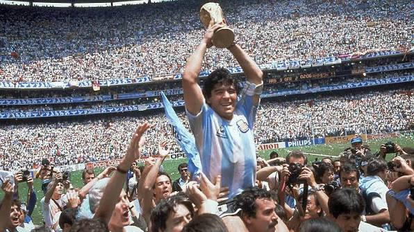

La atajada en el minuto 123 a Kolo Muani no fue solo una jugada; fue el momento en que el corazón de 45 millones de argentinos se detuvo para transformarse en leyenda eterna.
.jpeg)
Un repaso por la historia, la mística, los títulos y el potrero que nos hacen únicos.
Hablar de la Selección Argentina no es solo hablar de fútbol; es hablar de pasión, resiliencia y una identidad que se lleva en la sangre. Desde las gambetas de Maradona hasta la genialidad eterna de Lionel Messi, la Albiceleste ha demostrado que no importa cuántas veces caiga, siempre se levanta para alcanzar la gloria. Con tres estrellas en el pecho y un juego que enamora al planeta, para muchos, es simplemente la mayor expresión del fútbol mundial.
.jpeg "Muchaaachos, ahora nos volvimos a ilusionar")
| Competición | Cantidad | Años de los Títulos |
|---|---|---|
| Copas del Mundo | 3 | 1978, 1986, 2022 |
| Copas América | 16 | 1921, 1925, 1927, 1929, 1937, 1941, 1945, 1946, 1947, 1955, 1957, 1959, 1991, 1993, 2021, 2024 |
| Copa de Campeones Conmebol-UEFA (Finalissima) | 2 | 1993, 2022 |
Escuchar directamente en YouTube

La atajada en el minuto 123 a Kolo Muani no fue solo una jugada; fue el momento en que el corazón de 45 millones de argentinos se detuvo para transformarse en leyenda eterna.